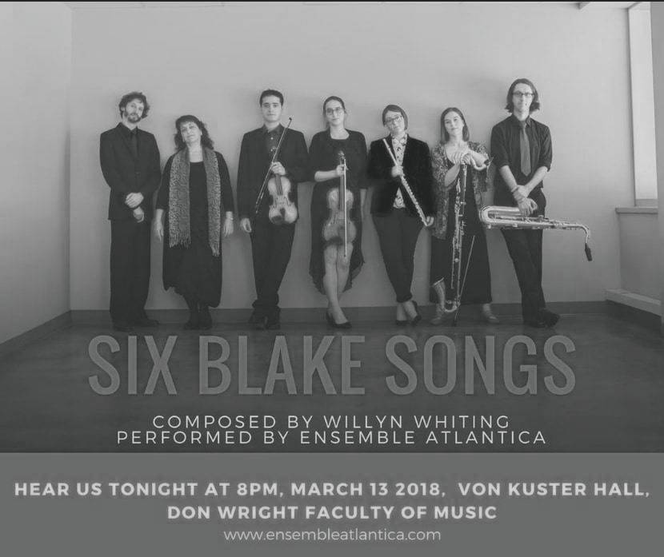

soprano, flute/piccolo, B♭ clarinet/bass clarinet, tenor saxophone/baritone saxophone, violin, viola

Six Blake Songs is a song cycle for Soprano and mixed chamber ensemble (Flute, Clarinet, Saxophone, Violin and Viola). The work sets several texts by the English poet William Blake (1757-1827), which all share the central theme of Time. Nearly all of these texts are excerpts from larger works, with the exception of the poem Ah, Sunflower, which is presented at the work’s conclusion. Discrete collections of frequencies, which are derived from either the frequency modulation of two notes or from the overtones of a single fundamental, provide the pitch content for the entire piece. In addition, many of the durations of notes, gestures, and phrases, are designed to fluctuate in size systematically.
‘The morning comes, the night decays, the watchmen leave their stations;
The grave is burst, the spires shed, the linen wrapped up;
The bones of death, the covering clay, the sinews shrunk & dried.
Reviving shake, aspiring move, breathing, awakening,
(America 1793: Plate 6; lines 37 - 40)
The eyes of fire, the nostrils of air, the mouth of water, the beard of earth.
The head Sublime, the heart Pathos, the genitals Beauty, the hands and feet Proportion.
The roaring of lions, the howling of wolves, the raging of the stormy sea, and the destructive
sword are portions of eternity too great for the eye of man.
(‘III - Proverbs of Hell’ from The Marriage of Heaven and Hell 1790: Pl.9; ln.48, Pl.10; ln.61, and Pl.8; ln.27)
Eternity is in love with the productions of Time… but of wisdom, no clock can measure.
(‘III - Proverbs of Hell’ from The Marriage of Heaven and Hell 1790: Pl.7; ln.10 and 12)
Every night and every morn
Some to misery are born;
Every morn and every night
Some are born to sweet delight.
Some are born to sweet delight,
Some are born to endless night.
(‘VIII - Auguries of Innocence’ from ‘The Pickering Manuscript’ 1803: ln.119 - 124)
‘Does spring hide its joy
When buds and blossoms grow?
Does the sower
Sow by night,
Or the ploughman in darkness plough?
(‘II - Earth’s Answer’ from Songs of Experience 1794:ln.16 - 20)
Re-engraved time after time,
Ever in their youthful prime,
My designs unchanged remain;
Time may rage but rage in vain.
For above Time’s troubled fountains
On the great Atlantic mountains,
In my golden house on high,
There they shine eternally.
(‘XXXIV’ from Miscellaneous Verses 1809-1812: ln.13 - 20)
Ah, Sunflower, weary of time,
Who countest the steps of the sun,
Seeking after that gilden clime
Where the traveller’s journey is done;
Where the youth pined away with desire
And the pale virgin shrouded in snow
Arise from their graves and aspire
Where my sunflower wishes to go.
(‘XX - Ah, Sunflower’ from Songs of Experience 1794: ln.1 - 8)
03.13.18 . 6pm EST . Music of Our Time: Graduate Composer's Recital . Von Kuster Hall, Don Wright Faculty of Music, University of Western Ontario . 1151 Richmond Street, London ON . CA
Ensemble Atlantica (Susan Dworkin, Soprano, Monique Aubé, Flute & Piccolo, Jossée MacInnis, Clarinets, Pascal Bard, Saxophones, Fransisco Eduardo Barradas Galvan, Violin, Sarah de Niverville, Viola), conducted by Baptiste Boiron
2018 . Six Blake Songs . Masters Thesis, University of Western Ontario https://ir.lib.uwo.ca/etd/5337/